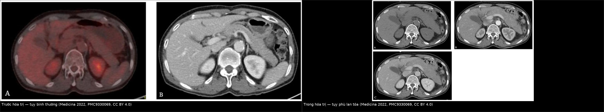
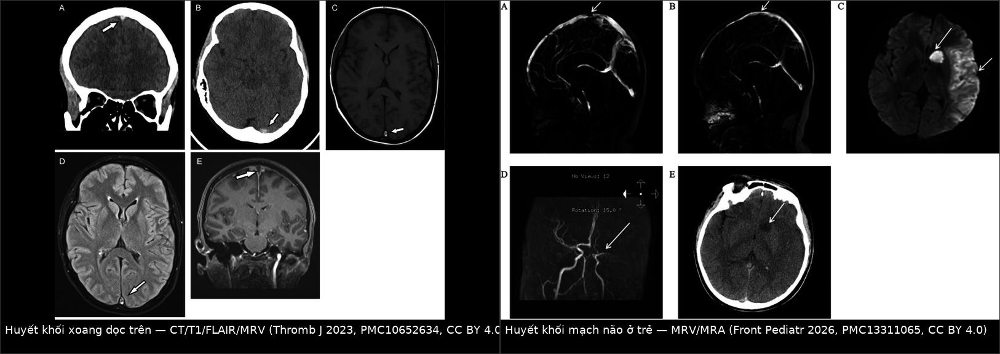
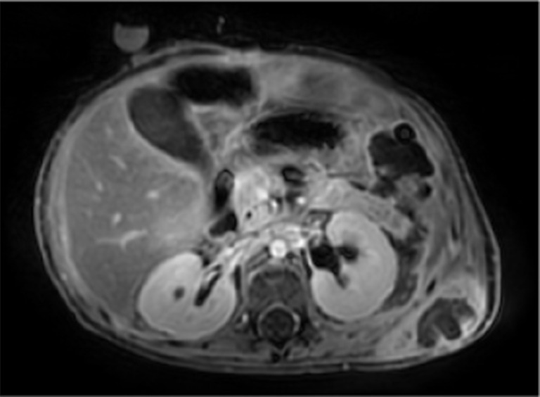
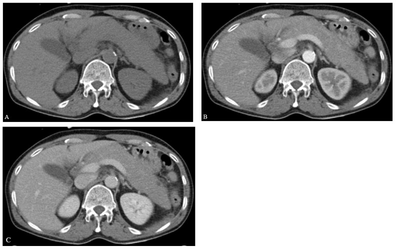
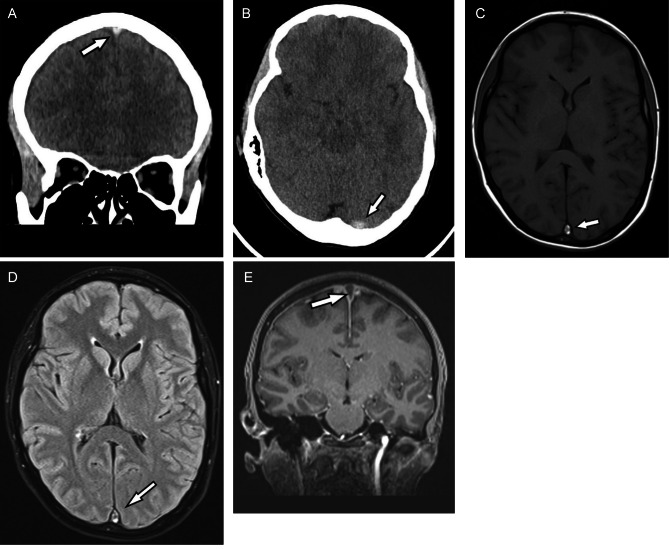

1662 — Độc tính asparaginase trong u lympho T/NK ngoại hạch (ENKTL): viêm tụy hoại tử, huyết khối xoang–tĩnh mạch & quy trình giữ – ngừng – tái dùng
Tags: pattern:viem-tuy-cap pattern:hoai-tu-tuy pattern:huyet-khoi-xoang pattern:giam-fibrinogen vung:tuy vung:mach-nao score:Atlanta score:CTCAE protocol:CT-bung protocol:MRI-tuy protocol:MRV
Mức chắc chắn (certainty): tổng hợp y văn (literature synthesis) — số liệu độc tính theo phác đồ ENKTL lấy từ bảng thử nghiệm lâm sàng của tổng quan CA Cancer J Clin 2026 (PMC13313535) + loạt P-GDP 57 bệnh nhân ENKTL (PMC6214348) + ca ENKTL xâm lấn tụy giả viêm tụy do asparaginase (Medicina 2022, PMC9330069) + 2 ca nguyên văn có ảnh viêm tụy/hoại tử (Transl Pediatr 2025, PMC12163796) + ca huyết khối xoang (Thromb J 2023, PMC10652634) + loạt huyết khối mạch não ở trẻ (Front Pediatr 2026, PMC13311065) + nghiên cứu AAP và tái dùng liều (Haematologica 2026, PMC12775779; J Cancer Res Clin Oncol 2025, PMC12480329). Không có thử nghiệm ngẫu nhiên nào về ngưỡng ngừng/tái dùng trong ENKTL — các ngưỡng dưới đây là tổng hợp thực hành, chỗ suy luận được ghi rõ.
Câu chốt: trong ENKTL, asparaginase (L-asparaginase/pegaspargase) là thuốc sống còn nhưng có hai mặt nạ hình ảnh: (1) tụy phù/hoại tử — và trong ENKTL tụy phù không đồng nghĩa viêm tụy do thuốc, vì u lympho T/NK có thể xâm lấn tụy lan tỏa đúng lúc đang truyền asparaginase (ca nguyên văn: lipase 1.437 U/L, amylase 683 U/L, EUS-FNB lại ra tế bào u lympho); (2) huyết khối do asparaginase làm giảm antithrombin III, fibrinogen, protein S — biểu hiện sớm nhất thường là huyết khối xoang tĩnh mạch não, xuất hiện 5–17 ngày sau liều PEG-asparaginase. Ngưỡng phải thuộc: lipase/amylase > 3 × ULN là tiêu chuẩn Atlanta (không phải "amylase tăng nhẹ"), hoại tử tụy chỉ thấy rõ trên CT sau 72 giờ, và fibrinogen < 100 mg/dL (1,0 g/L) là ngưỡng thay thế bằng huyết tương tươi đông lạnh/kết tủa lạnh.
1. Tổng quan bệnh học – cơ chế hình ảnh
1.1 Vì sao ENKTL lại phụ thuộc asparaginase
- Tế bào ENKTL thiếu asparagine synthetase (ASNS) → không tự tổng hợp đủ asparagine → chết khi asparagine huyết tương bị thủy phân. Vì vậy mọi phác đồ hiệu quả (SMILE, P-GemOx, DDGP, MESA, GELAD, AspaMetDex) đều chứa L-asparaginase hoặc pegaspargase.
- Cũng chính vì thế, độc tính là giá phải trả bắt buộc, không phải "tác dụng phụ hiếm": trong bảng thử nghiệm ENKTL, hạ fibrinogen độ 3/4 gặp 11–28,8%, tăng amylase 19%, tăng đường huyết 18%, viêm tụy 7,5%, tăng triglyceride 8,6% tùy phác đồ (PMC13313535).
1.2 Viêm tụy do asparaginase: TẠI SAO và TẠI SAO hình ảnh khó
- Cơ chế: ức chế tổng hợp protein ở tế bào nang tụy → không tổng hợp được enzym tiêu hóa dạng tiền chất → rối loạn bài tiết, tự tiêu hóa mô tụy (autodigestion) → phù, hoại tử mỡ, hoại tử nhu mô. Yếu tố cơ địa: biến thể PRSS1–PRSS2 làm tăng nguy cơ (Haematologica 2019, PMC6395330 — trích số).
- Diễn tiến hình ảnh theo thời gian (rất quan trọng):
- < 72 giờ: CT có thể bình thường hoặc chỉ phù nhẹ — hoại tử chưa biểu hiện rõ; đây là lý do không được kết luận "không viêm tụy" bằng CT sớm.
- Sau 72 giờ: vùng giảm đậm độ không bờ trong tụy = hoại tử; dịch quanh tụy, dịch màng phổi – ổ bụng.
- Sau 4 tuần: nang giả tụy (pseudocyst) — vỏ xơ, dịch trong; tới 60% ca AAP có nang giả, trung bình 26% (Haematologica 2026, PMC12775779).
- Ngưỡng Atlanta 2012 (2 trong 3): (1) đau thượng vị lan sau lưng; (2) amylase/lipase > 3 × ULN; (3) hình ảnh điển hình. Trong AAP, men tụy có thể bình thường hoặc thấp giả do lipemia — nên hình ảnh có quyền quyết định.
- Tần suất – kết cục (số liệu dùng được):
- AAP ở ALL: 1–7,4%; trong một đoàn hệ 586 trẻ: 9,7% (57/586), khởi phát trung vị ngày 195 (IQR 112–236), 59% độ 2, 34% độ 3, 6% độ 4, 1 ca tử vong.
- 43% ca AAP có di chứng hình ảnh (hoại tử 4, nang giả 8, cả hai 10 trong 39 ca có phim theo dõi).
- Một loạt khác: 39,5% (17/43) có suy tạng hoặc hoại tử tụy, trong đó 27,9% (12/43) hoại tử ngay tuần đầu.
- Trong ENKTL: viêm tụy 7,5% (MESA, n=40), tăng amylase 19% (SMILE, n=20), loạt P-GDP 57 bệnh nhân không có ca viêm tụy nào nhưng 26,5% hạ fibrinogen độ 3 (PMC6214348).
1.3 Huyết khối do asparaginase: TẠI SAO và đọc hình ảnh thế nào
- Cơ chế: gan giảm tổng hợp antithrombin III (ATIII), fibrinogen, protein S → tăng đông; đồng thời tăng triglyceride làm tăng độ nhớt (xem 684 cho ngưỡng TG). Kết quả: huyết khối tĩnh mạch chiếm ưu thế, đặc biệt xoang tĩnh mạch não.
- Số liệu định lượng:
- Trẻ ALL: huyết khối mạch não 6/1.138 = 0,53%; 5 CVST + 1 nhồi máu động mạch; 5/6 ca xảy ra 5–17 ngày sau PEG-asparaginase; ATIII hồi phục chậm 5–13 ngày, D-dimer giảm trong 1–3 ngày (Front Pediatr 2026, PMC13311065).
- Đoàn hệ ALL người lớn/trẻ ở Ethiopia: 11,2% có biến cố huyết khối, toàn bộ là tĩnh mạch, huyết khối tĩnh mạch não 41,2% các biến cố (PMC11883476).
- ENKTL: 2/57 (3,5%) phải ngừng pegaspargase vì huyết khối trong phác đồ P-GDP (PMC6214348).
- Ca nguyên văn MPAL: CVST ngày 26 (6 ngày sau PEG-asparaginase 3.340 IU), ATIII 54% (bình thường 83–128%), protein S tự do giảm, fibrinogen thấp; LMWH + bù ATIII → cải thiện sau 3 ngày (PMC10652634).
- TẠI SAO hình ảnh trông như vậy:
- CT không cản quang: máu đông trong xoang tăng đậm độ (dấu "dense sinus"/"dense cord") — chỉ thấy trong ~1 tuần đầu, sau đó đẳng tỷ trọng → CT âm không loại trừ.
- T1W: methemoglobin nội bào ở huyết khối bán cấp → T1 sáng trong xoang; FLAIR cũng sáng.
- Sau cản từ: dấu tam giác rỗng (empty delta sign) — thành xoang ngấm thuốc, lòng xoang không ngấm.
- MRV/CTV: mất tín hiệu dòng chảy trong xoang bị tắc — đây là chuỗi xung chốt chẩn đoán; không dùng TOF-MRA để loại trừ huyết khối tĩnh mạch (TOF bỏ sót xoang chảy chậm).
2. Mẫu hình + chẩn đoán phân biệt theo vị trí (Gamut)
Mẫu hình 1 — tụy phù/to/dịch quanh tụy ở bệnh nhân ENKTL đang truyền asparaginase:
- Viêm tụy do asparaginase (hoại tử / nang giả) · u lympho T/NK xâm lấn tụy (lan tỏa, có thể không tạo khối trên CT) · viêm tụy do tăng triglyceride (xem 684) · nhiễm trùng/tắc mật–tụy · nang giả bội nhiễm/áp-xe · thâm nhiễm do HLH (ENKTL hay kèm HLH).
Mẫu hình 2 — đau đầu/bệnh cảnh thần kinh cấp ở bệnh nhân ENKTL đang điều trị:
- Huyết khối xoang tĩnh mạch não (asparaginase) · nhồi máu tĩnh mạch/xuất huyết · xâm lấn thần kinh trung ương của ENKTL · nhiễm trùng cơ hội (nấm, lao) do suy giảm miễn dịch · hội chứng HLH với tổn thương thần kinh · PRES do thuốc/tăng HA.
Gợi nhớ ASPASE: Amylase/lipase > 3× ULN · Sinus thrombosis (ATIII thấp) · Pseudocyst sau 4 tuần · Antithrombin/fibrinogen giảm · Stop–rechallenge theo mức độ · EUS-FNB khi nghi u xâm lấn.
3. Bảng so sánh phân biệt (ma trận đối chiếu)
| Thực thể (entity) | Hình ảnh điển hình | Chốt vào (rule-in) | Chốt loại (rule-out) | Gợi ý xác nhận |
|---|---|---|---|---|
| Viêm tụy do asparaginase | Tụy phù lan tỏa, giảm đậm độ không bờ sau 72 giờ, dịch quanh tụy/màng phổi; nang giả sau 4 tuần | Lipase/amylase > 3 × ULN + đau thượng vị + hình ảnh, khởi phát trung vị 10,5 ngày sau liều | Tụy có khối/đám đặc bờ rõ hoặc hạch quanh tụy → nghĩ u xâm lấn | CT bụng có cản quang sau 72 giờ; MRI/MRCP khi nghi hoại tử/nang giả |
| U lympho T/NK xâm lấn tụy | Tụy to lan tỏa, đồng đậm độ, không có ổ đặc rõ — giống hệt viêm tụy; PET trước đó có thể bình thường | EUS-FNB ra tế bào u lympho; tụy to nhưng men tụy chỉ tăng vừa; không đáp ứng với ngừng asparaginase | Men tụy giảm nhanh sau ngừng thuốc + tan phù → do thuốc | EUS-FNB (không hoãn vì "đang viêm tụy"); PET-CT; xét nghiệm EBV DNA |
| Viêm tụy do tăng triglyceride | Tụy phù + huyết thanh đục như sữa, có thể hoại tử | TG > 1.000 mg/dL (rất nặng > 2.000) + hình ảnh | TG bình thường → loại | Xem 684; định lượng TG trước mỗi liều |
| Huyết khối xoang tĩnh mạch não | Xoang tăng đậm độ trên CT không cản quang (tuần đầu), T1 sáng, empty delta, MRV mất dòng | MRV/CTV mất tín hiệu xoang + ATIII thấp + D-dimer cao | MRV thông tốt + không tăng đậm độ → loại | MRV bắt buộc; CTV khi không chụp được MRI; LMWH |
| Nang giả tụy / áp-xe | Nang vỏ xơ, dịch trong (nang giả) hoặc có khí/thành dày (áp-xe), sau ≥ 4 tuần | Nang + khí trong nang/thành dày + sốt = áp-xe | Nang không khí, không thành dày, không sốt → nang giả vô khuẩn | MRI/MRCP; chọc hút khi nghi nhiễm |
| Thâm nhiễm HLH | Gan lách to, hạch, có thể thâm nhiễm tụy | Ferritin rất cao + cytopenia + EBV dương | Ferritin/cytopenia không thoả → loại | Xem tiêu chuẩn HLH 2004 |

Trái: PET/CT trước điều trị — tụy bình thường. Phải: trong hóa trị — tụy to lan tỏa, đồng đậm độ trên 3 thì; EUS-FNB xác định tế bào ENKTL xâm lấn tụy. Nguồn: Medicina 2022, PMC9330069, CC BY 4.0, ảnh ghép letterbox.
Trái: CT không cản quang (xoang tăng đậm độ), T1/FLAIR (huyết khối sáng) và MRV (mất dòng xoang dọc trên). Phải: MRV huyết khối xoang + MRA tắc M1 ở trẻ ALL sau PEG-asparaginase. Cả hai CC BY 4.0, ảnh ghép letterbox.Ba câu hỏi chốt khi tụy "phù" trong lúc truyền asparaginase
- Có khối/đám đặc hoặc hạch quanh tụy không? Có → u xâm lấn, cần EUS-FNB trước khi quy hết cho thuốc.
- Men tụy có > 3 × ULN và giảm sau ngừng thuốc không? Giảm nhanh → hướng do thuốc; tăng kéo dài dù đã ngừng → nghĩ xâm lấn/u.
- Có huyết khối đi kèm không? Đau đầu + ATIII thấp → MRV ngay, đừng chờ "hết viêm tụy".
4. Protocol chụp + hệ phân độ/điểm chuẩn hóa
- CT bụng – tụy: cản quang 3 thì (không cản quang, động mạch, tĩnh mạch cửa), lát ≤ 3 mm, chụp sau 72 giờ nếu nghi hoại tử; chỉ số Balthazar CTSI 0–10 (phù 0, dịch 1, hoại tử ≤ 30% = 2, 30–50% = 4, > 50% = 6; cộng điểm viêm quanh tụy 0–2) — CTSI ≥ 7 = nặng.
- MRI/MRCP tụy: khi cần đánh giá hoại tử, xuất huyết, nang giả, ống tụy; MRI nhạy hơn CT cho nang giả và dịch nhỏ.

MRI bụng ở cùng bệnh nhi: hoại tử/hóa lỏng mô sau phúc mạc trái và nang giả nhỏ ở thân tụy. Nguồn: Transl Pediatr 2025, PMC12163796, CC BY-NC-ND 4.0.- MRV/CTV não: bắt buộc khi đau đầu mới, co giật, thiếu hụt thần kinh, hoặc ATIII < 60% kèm D-dimer tăng; MRV là chuẩn, không dùng TOF-MRA thay thế.
- Xét nghiệm theo dõi mỗi đợt: amylase/lipase (trước + khi có triệu chứng), fibrinogen, ATIII, PT/aPTT, D-dimer, triglyceride, glucose.
- Phân độ độc tính: CTCAE v5.0 — viêm tụy: độ 3 = đau nặng, nôn, cần dinh dưỡng tĩnh mạch/thủ thuật; độ 4 = đe dọa tính mạng; độ 5 = tử vong. Hạ fibrinogen: thay thế khi < 100 mg/dL (1,0 g/L) hoặc có chảy máu (Thromb J 2023, PMC10652634).
- Quy trình giữ – ngừng – tái dùng (tổng hợp, không có RCT trong ENKTL):
flowchart TD
A[Đang truyền asparaginase - đau thượng vị/sốt/nôn] --> B[Lipase, amylase, TG, fibrinogen, ATIII, CT bụng]
B --> C{Lipase/amylase > 3x ULN hoac hinh anh viem tuy?}
C -->|Khong| D[Tiep tuc phac do - theo doi 24-48 gio]
C -->|Co| E[Ngung asparaginase - nhin an - bu dich - giam dau]
E --> F{Co hoai tu / suy tang / nang gia / viem tuy do 3-4?}
F -->|Co| G[Ngung VINH VIEN asparaginase - chuyen phac do khong asparaginase]
F -->|Khong| H{Men tuy ve binh thuong trong 72 gio va khong nang gia?}
H -->|Khong| G
H -->|Co| I[Tai dung lieu: giam 25-50% hoac doi che pham - theo doi sat]
I --> J{Tai phat viem tuy?}
J -->|Co| G
J -->|Khong| K[Tiep tuc phac do]
B --> L{ATIII < 60% hoac D-dimer tang + dau dau?}
L -->|Co| M[MRV nao ngay - LMWH neu huyet khoi]
L -->|Khong| D
- Tái dùng liều (bằng chứng thực tế): trong 32 trẻ AAP, 17 (53%) được tái dùng PEG-ASP, 7 tái phát (41%); nhóm giảm liều/tạm ngừng tái phát 5/14, nhóm không giảm tái phát 2/3; không ca nào tử vong do tái phát (PMC12480329). Điều kiện tái dùng được khuyến nghị: men tụy về bình thường nhanh, không có nang giả/hoại tử (PMC12775779).
- Kháng đông: LMWH là lựa chọn khi có huyết khối; bù ATIII khi ATIII rất thấp và có huyết khối tiến triển; thời gian ≥ 3 tháng và cá thể hóa vì bệnh nhân vừa tăng đông vừa giảm fibrinogen (nguy cơ chảy máu song song).
5. Biến thể bình thường và cạm bẫy
- Tụy "to" do tư thế/không đủ thì: tụy có thể trông dày ở người gầy hoặc khi chụp quá sớm; luôn so kích thước đầu–thân–đuôi với phim trước và đọc thì tĩnh mạch cửa (nhu mô tụy sáng đều).
- Amylase bình thường không loại trừ viêm tụy: lipemia làm amylase giảm giả; dùng lipase và hình ảnh.
- Tăng amylase đơn thuần (không đau, không hình ảnh) không phải viêm tụy — trong SMILE 19% tăng amylase độ 3/4 nhưng không phải tất cả là viêm tụy.
- Quy hết mọi thứ cho asparaginase: trong ENKTL, u xâm lấn tụy có thể xuất hiện đúng ngày truyền thuốc; EUS-FNB là cách duy nhất phân biệt, và không được hoãn vì "đang viêm tụy".
- CT không cản quang bình thường trong 72 giờ đầu không loại trừ hoại tử; CT sớm "sạch" không được dùng để tiếp tục truyền thuốc khi lâm sàng nặng.
- Bỏ sót CVST vì CT không cản quang âm: huyết khối đẳng tỷ trọng sau tuần đầu; MRV là bắt buộc khi nghi.
- Nhầm hạ fibrinogen do asparaginase với DIC: DIC có giảm tiểu cầu + INR tăng + D-dimer rất cao + schistocyte; asparaginase gây giảm fibrinogen đơn độc với tiểu cầu bình thường.
6. Tự lượng giá — Blind Quiz
Ca 1 — Trẻ ALL, ngày thứ 9 sau pegaspargase: đau bụng, nôn, sốt. CT không cản quang và CT cản quang cách nhau 8 ngày.

- Câu hỏi: Vì sao CT đầu "gần bình thường" mà 8 ngày sau lại có nhiều ổ giảm đậm độ? Chẩn đoán? Biến chứng nào phải tìm trên ảnh?
Bấm để hiện đáp án (findings + chẩn đoán)
- Dấu hiệu: (A) CT không cản quang: vùng giảm đậm độ nhẹ ở đuôi tụy, không phù rõ; (B) CT cản quang sau 8 ngày: nhiều ổ giảm đậm độ không bờ = hoại tử tụy, kèm dịch màng phổi và dịch ổ bụng.
- Chẩn đoán: viêm tụy hoại tử do asparaginase (AAP) — hoại tử chỉ rõ sau 72 giờ, nên CT sớm bình thường không loại trừ.
- Biến chứng phải tìm: hội chứng khoang bụng (ACS) (ca này phải mở bụng giải ép), nang giả, áp-xe, suy tạng.
- Nguồn ảnh: Translational Pediatrics 2025, PMCID PMC12163796, CC BY-NC-ND 4.0 (nguyên bản, giữ nhãn A–B).
Ca 2 — ENKTL phác đồ SMILE, ngày 8 truyền L-asparaginase 6.000 IU/m²; 2 ngày sau đau thượng vị. Lipase 1.437 U/L, amylase 683 U/L. Ảnh dưới là gì?

- Câu hỏi: Men tụy > 3 × ULN có đủ chốt "viêm tụy do asparaginase"? Cần làm gì trước khi ngừng vĩnh viễn thuốc?
Bấm để hiện đáp án (findings + chẩn đoán)
- Dấu hiệu: (A–C) tụy to lan tỏa, đồng đậm độ, không có ổ đặc bờ rõ; PET/CT trước hóa trị bình thường.
- Chẩn đoán: u lympho T/NK xâm lấn tụy (không phải viêm tụy do thuốc) — EUS-FNB lấy đuôi tụy xác định tế bào u lympho (CD3+, CD56+, CD20−).
- Bài học: men tụy > 3 × ULN thoả tiêu chuẩn Atlanta nhưng không chứng minh nguyên nhân; trong ENKTL phải EUS-FNB khi tụy to lan tỏa kéo dài, đặc biệt nếu không cải thiện sau ngừng asparaginase.
- Phản biện: ca này rất hiếm (xâm lấn tụy đơn độc) — nhưng chính vì hiếm nên dễ bị quy oan cho thuốc và ngừng asparaginase vô ích trong khi bệnh tiến triển.
- Nguồn ảnh: Medicina (Kaunas) 2022, PMCID PMC9330069, CC BY 4.0 (nguyên bản, giữ nhãn A–C).
Ca 3 — Nữ 36 tuổi, MPAL, ngày 26 sau khởi động phác đồ có PEG-asparaginase (3.340 IU ngày 20): đau đầu, chóng mặt, dị cảm. CT và MRI dưới đây.

- Câu hỏi: Dấu hiệu nào trên CT không cản quang? Chuỗi xung nào chốt? Xét nghiệm đông máu nào giải thích cơ chế?
Bấm để hiện đáp án (findings + chẩn đoán)
- Dấu hiệu: (A–B) CT không cản quang: xoang dọc trên và phần gần xoang ngang trái tăng đậm độ; (C) T1W: huyết khối tăng tín hiệu trong xoang; (D) FLAIR: tăng tín hiệu; (E) MRV: mất tín hiệu dòng chảy xoang dọc trên.
- Chẩn đoán: huyết khối xoang tĩnh mạch não do PEG-asparaginase (ngày 26, tức 6 ngày sau liều).
- Cơ chế trên xét nghiệm: ATIII 54% (83–128%), protein S tự do giảm, fibrinogen thấp, aPTT/PT kéo dài — đúng chân dung "giảm đông xét nghiệm nhưng tăng đông thực thể" của asparaginase.
- Xử trí: LMWH + bù ATIII, cải thiện thần kinh sau 3 ngày; fibrinogen < 100 mg/dL → huyết tương tươi/kết tủa lạnh.
- Nguồn ảnh: Thrombosis Journal 2023, PMCID PMC10652634, CC BY 4.0 (nguyên bản, giữ nhãn A–E).
Bài liên quan chéo
- 496 – Điều trị & theo dõi ENKTL: asparaginase, ghép tế bào gốc, EBV DNA
- 684 – Tăng triglyceride do asparaginase/pegaspargase ở trẻ ALL: ngưỡng giữ–hoãn–tái dùng
- 135 – Viêm tụy cấp: phân độ Atlanta & hình ảnh
- 136 – U nang tụy (nang giả, IPMN)
- 626 – Viêm tụy cấp ở trẻ
- 628 – Viêm tụy do tăng triglyceride ở trẻ
- 219 – PRES & RCVS (chẩn đoán phân biệt đau đầu + thiếu hụt thần kinh)
- 259 – Hội chứng SMART sau xạ trị não
- 214 – Nhiễm trùng thần kinh trung ương
Không dùng để chẩn đoán độc lập khi chưa có người hướng dẫn.